カテゴリ：ブログ作成～公開後～
投稿日：2025年5月11日
ブログを公開して、更新もサクサクできるようになった今――
「あれ？ これってGoogleで検索したら出てくるんじゃね？」 と期待して、ブログタイトルで検索してみたら……
出てこなーーーい！！
安心してください、まだ設定が足りないだけです。 今回は、Google先生に「ここにブログありますよ～！」と手を挙げる方法をご紹介します。
やることはシンプル！``タグやファイル構造を見直しつつ、 Google Search Consoleに登録して、いざ世界デビュー！
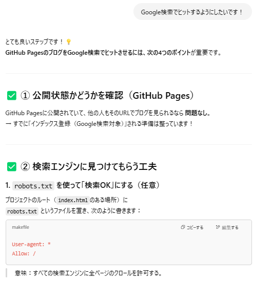公開状態は確認済みなので②、検索エンジンに見つけてもらう工夫に進みます。
クローンフォルダ内のindex.htmlのあるフォルダに、robots.txtを作成。
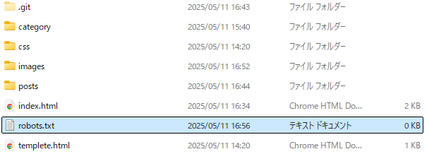robots.txtにコードを入力します。
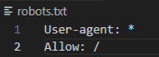これですべての検索エンジに全ページのクロールが許可されました。
クロールとは、
検索エンジンのクロールとは、検索エンジンのクローラーと呼ばれるロボットがWebサイトを巡回し、コンテンツを収集し、インデックスするプロセスです。これにより、Webページが検索結果に表示されるようになります。
とのことです。
HTMLファイルのheadタグ内に、metaタグを使って検索向けの情報をつけるようです。
試しにindex.htmlに追加してみます。
descriptionにはブログの簡単な説明やキーワードを書くみたいですが、具体的に何を書けば良いのか聞いてみます。
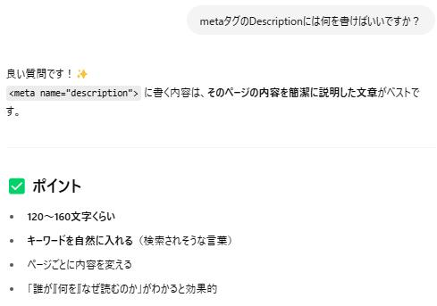。。。
120～160文字くらい！！！！？！？？？？！？
しかもページごとに内容を変える！？聞いてよかったーーー
検索でヒットするようにするためにはかなり重要な内容みたいなので、一緒に考えてもらいます！
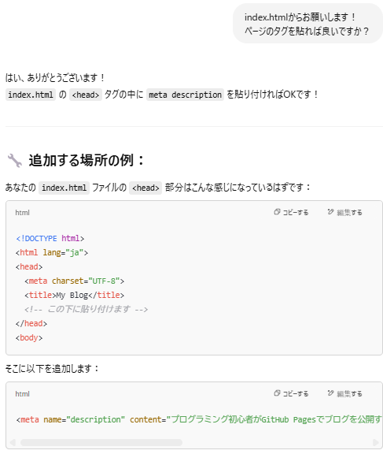見切れていますが、プログラミング初心者がGitHub Pagesでブログを公開するまでの学びを記録。HTMLやCSSの使い方、画像の貼り方、記事の整理などを実体験をもとに紹介しています。と書かれています。
index.htmlに入力して次は第1回の記事を考えてもらいましょう。
まずは記事の内容を伝える方法を聞きます。
h1タグからでいいみたいですね！貼り付けてみます。
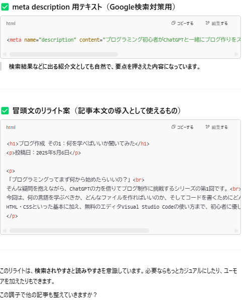するとmeta description用テキストだけでなく、冒頭文のリライト案まで出してくれました。
優秀すぎますChat GPT！！！検索されやすさと読みやすさが重要みたいです。
実際に検索した際も冒頭文が表示されていたりするので、今後は冒頭文を意識して作成したほうがよさそう！
しかもこれにユーモアを加えたりもできるみたいなので、お願いしてみましょう！
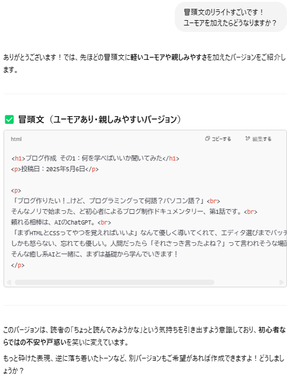ちょうどいい砕け具合！！！天才か～～～！！！
今がちょうどいいですが、せっかくなので更に砕けた表現をお願いします。
クッキングソルトぐらいサラッサラに砕けました！！
さらに関西弁寄りやギャル口調も気になりますがこれで記事1本書けそうなのでやめておきます。
一旦このスタイルを固定させておきます。
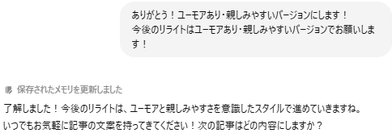保存されたメモリを更新しました と出ましたね。これが記憶したという認識なんですかね？聞いてみましょう！
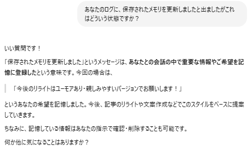合っていたようです！わかりやすいですね！メモリの確認もできるみたいです。
全ての記事の冒頭文をリライトしてもらって、descriptionの内容も書き換えたところで次にいきます。
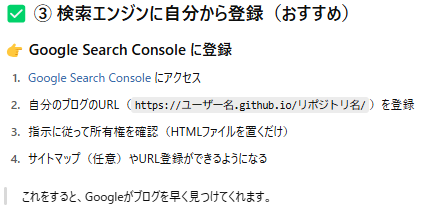Google Search Consoleに登録します。
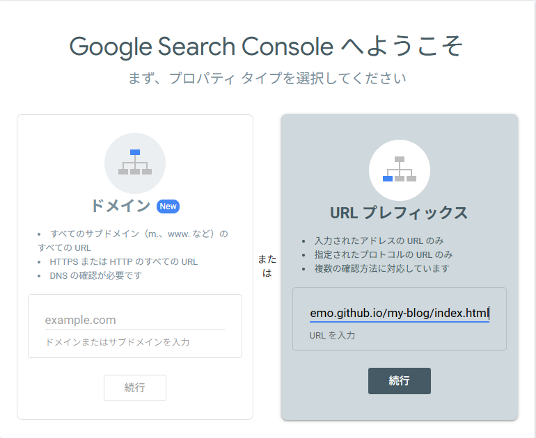アクセスしたら、右側のURL プレフィックスを選択し、自分のURLを入力します。
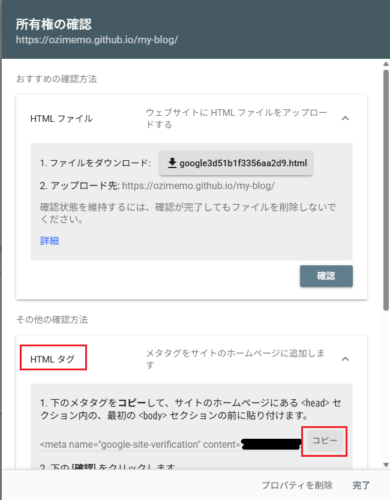すると所有権の確認画面が出るので、下のその他の確認方法の更に下、HTMLタグの所を展開し、出てきたタグをコピー
inde.htmlに貼り付けます。
貼り付ける箇所は、<head>セクション内の、最初の<bod>セクションの前です。
貼り付けたら確認を押します。
しばらくすると、上のような所有権を証明しましたという画面になればOKみたいです！
検索エンジンのデータベースに登録（インデックス登録）されるには数日かかる場合があるのでしばらく様子見ます！
これでようやくブログを公開できたと言えるかもしれません！
ということで今回はここまで！
カテゴリ：ブログ作成～公開後～